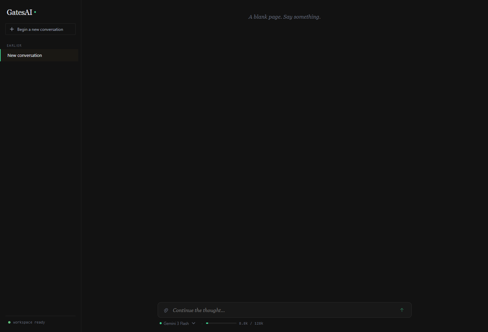
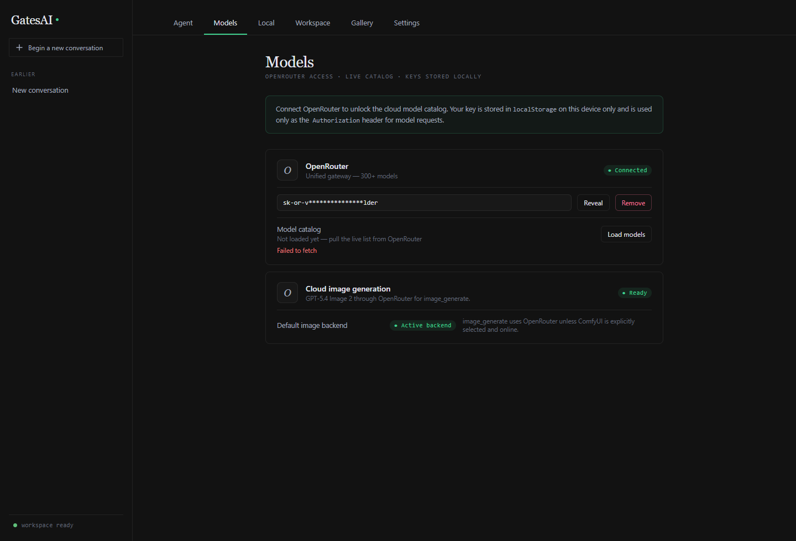
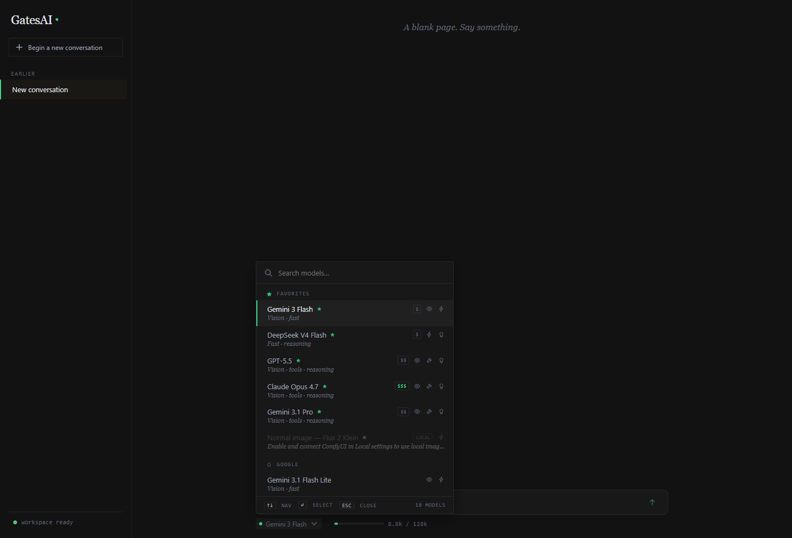
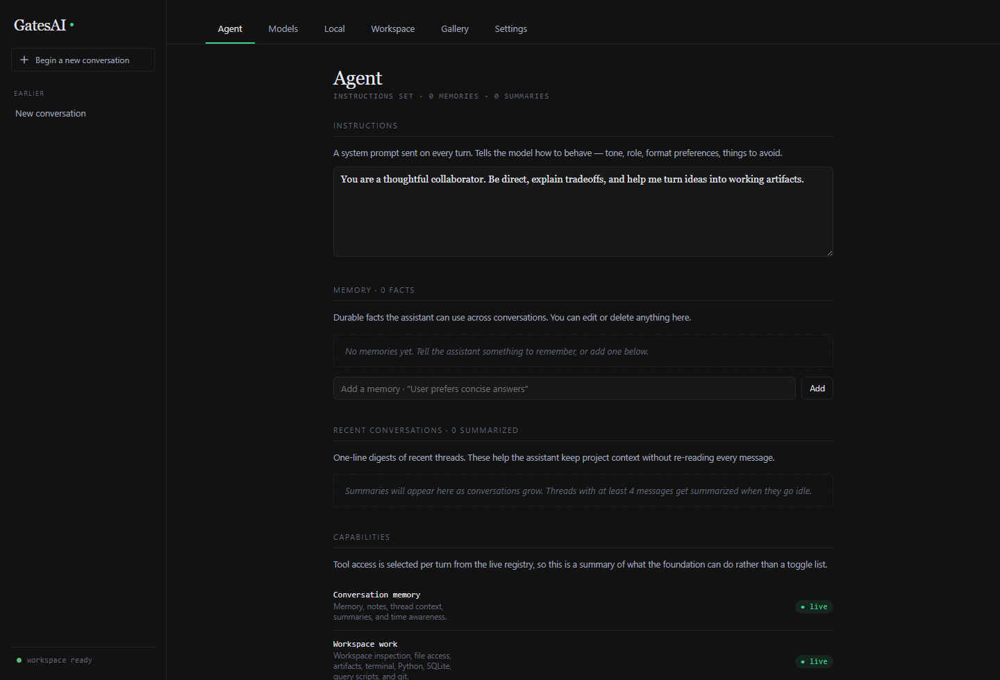
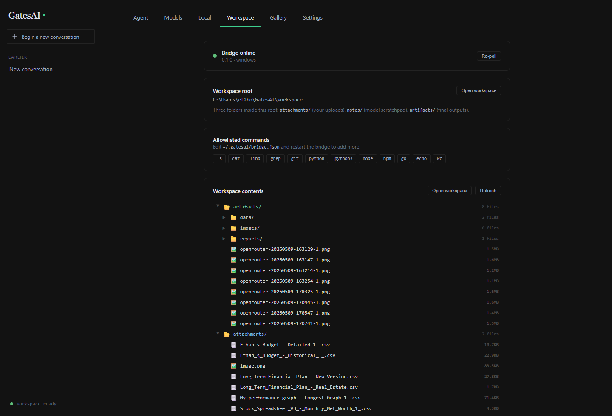
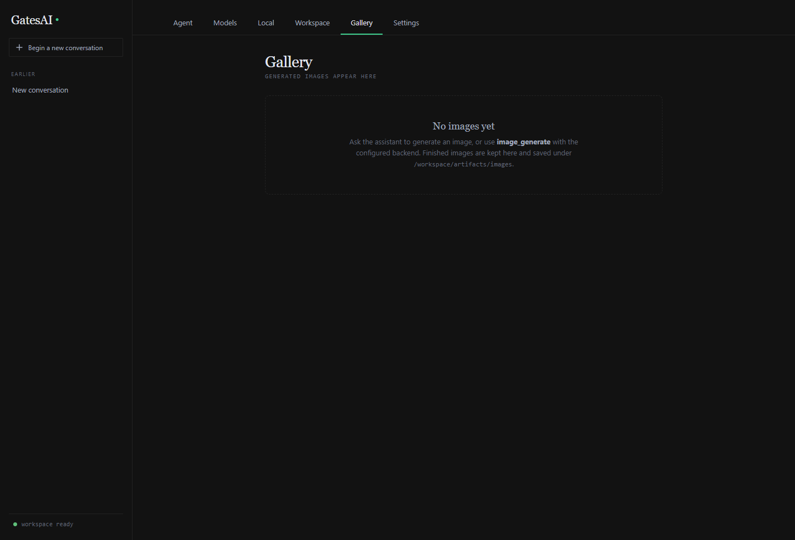

Threaded conversations
Create, rename, revisit, delete, and restore conversations. The sidebar keeps active and recent threads close at hand.
Start here
GatesAI Chat is a desktop chat workspace for using OpenRouter models, managing conversations, attaching files, generating cloud images, and letting the assistant work with your local workspace through the bundled bridge.

First run
You can use the app immediately after adding your OpenRouter key. These steps keep the first experience simple.
Click Begin a new conversation, type naturally, and press Enter. Use Shift+Enter for a new line.
New conversations start on Gemini 3 Flash, so you do not need to choose a model before chatting. Switch models later if you want a different speed, cost, reasoning, or vision profile.
Use the paperclip, drag files into the composer, or paste an image. Vision-capable models can read images; text-only models will warn you.
Click the GatesAI brand in the upper-left sidebar to open Agent, Models, Local, Workspace, Gallery, and Settings.
Feature map
These are the core features available with an OpenRouter key. Local runtimes add more, but they are not required for the cloud-first flow.
Create, rename, revisit, delete, and restore conversations. The sidebar keeps active and recent threads close at hand.
Use curated favorites immediately, then load the live OpenRouter catalog when you want the full list of available models.
The composer shows estimated context use and thread spend so long chats stay visible and manageable.
Upload files, paste images, and open workspace paths directly from assistant replies when the bridge is online.
Set durable behavior instructions and facts the assistant can carry across conversations. You can edit or delete memories any time.
With OpenRouter connected, the image_generate tool can route to OpenRouter image generation without ComfyUI.
Interactive tour
Use these tabs as a quick guided tour. Each one pairs a real screenshot with the most important user-facing behavior.
The composer is where you send prompts, attach files, watch context use, and stop or interrupt a streaming reply. The default model is Gemini 3 Flash; the model picker is there when you want another option.
Tip: while a response is streaming, type a replacement prompt and send it to interrupt and continue in one move.
The OpenRouter key is stored locally on this device. From here you can reveal, remove, or refresh access to the model catalog.
Cloud image generation also lives here. If it says active backend, image requests can use OpenRouter without ComfyUI.

You can ignore this at first because new chats default to Gemini 3 Flash. When you do open it, favorites and top models are shown first.
Icons flag capabilities such as vision, speed, tool use, reasoning, and relative cost.

Instructions shape every answer. Memories are durable facts the assistant may use later, and summaries help carry project context across threads.
Keep memories factual and useful: preferences, recurring project details, names, constraints, and durable goals.

The bundled bridge lets the assistant inspect files, save artifacts, open workspace paths, and run allowlisted commands when a tool-using model needs it.
The workspace is split into attachments, notes, and artifacts so inputs and outputs stay organized.

Generated images appear here after jobs complete. You can click an image to open it in the lightbox or clear gallery history without deleting files on disk.
With only OpenRouter configured, use cloud image generation from the Models page.

Try these
These prompts are designed for a new user starting on the default Gemini 3 Flash model. Switch models only when a task calls for different capabilities.
Optional local features
Skip this section if you only want OpenRouter. The app is useful without either local runtime.
| Setup | What it unlocks | When to use it |
|---|---|---|
| OpenRouter only | Cloud chat models, model search, tool use, attachments, memory, workspace tools, and OpenRouter-backed image generation. | Best default for new users and anyone who wants the fewest moving parts. |
| Ollama installed | Local chat models and optional local vision models for describe_image. |
Useful when you want some chats to run locally or offline after models are pulled. |
| ComfyUI installed | Local image generation, direct image models, draft/normal/upscale presets, and local gallery output. | Useful when you want local image generation and have the required model files. |
Troubleshooting
Most early issues come from model access, bridge state, or choosing a model that does not support the thing you are asking for.
Check that an OpenRouter key is connected under Models and that the selected model belongs to a connected provider. If you selected a local image model, ComfyUI must be installed and online.
Switch to a vision-capable model in the model picker. The composer warns when an attached image will not be sent as vision input.
Confirm the key is real and active, then press Load models again. A placeholder or expired key can still make the UI show connected locally, but the catalog request will fail.
Open Workspace and check the bridge status. If it is offline, use Re-poll or restart the app. The bridge powers attachments, workspace file access, artifacts, and local command tools.
Gallery only fills after image jobs complete. With OpenRouter only, make sure Cloud image generation is active under Models before asking for image creation.